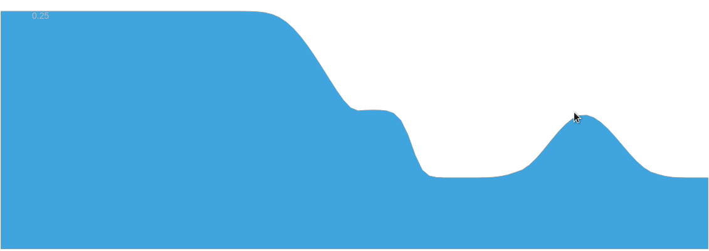

José Galaz Mora

Flume experiment
Click/touch and drag the water as you wish. To put it technical, it is a one dimensional implementation of a Finite Volume, Roe-type Riemann solver of the Shallow Water Equations without topography variations.